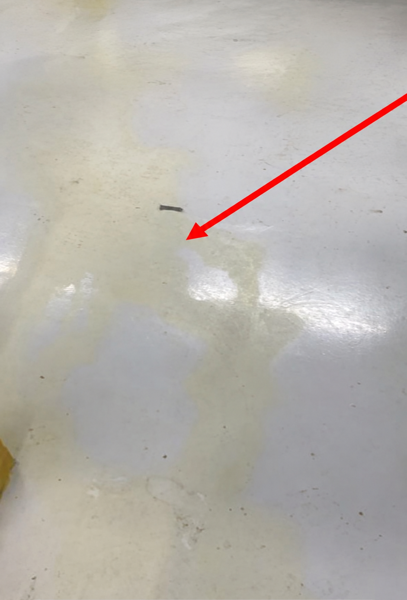

Missão
Prestar serviços de manutenção predial e climatização com excelência técnica, priorizando a prevenção como caminho para a continuidade operacional dos clientes.
Manutenção preventiva para operações de alta exigência.
Shopping Centers · Hotéis · Edifícios Corporativos · Condomínios · Indústrias
Quem somos
A JC Manutenção é especializada em manutenção predial e soluções técnicas, com foco em sistemas de climatização, Fan Coil, motores e dutos.
Nosso compromisso é com a prevenção. A manutenção preventiva programada é o objetivo principal, reduzindo falhas, evitando paradas não programadas e ampliando a vida útil dos equipamentos.
Levamos para cada contrato uma experiência técnica e operacional construída em ambientes de alta exigência: shopping centers, hotelaria, condomínios de alto padrão e operações industriais. O resultado é menos paradas, mais previsibilidade e continuidade operacional.

Empresa especializada em manutenção preventiva de sistemas de climatização, com dezessete anos de experiência técnica em shopping centers, hotelaria cinco estrelas, condomínios de alto padrão e ambientes industriais. Atuação registrada sob o CNAE 4322-3/02, com equipe uniformizada, procedimentos de segurança e relatório fotográfico em cada intervenção.
Prestar serviços de manutenção predial e climatização com excelência técnica, priorizando a prevenção como caminho para a continuidade operacional dos clientes.
Ser referência em manutenção preventiva programada de sistemas de climatização em edifícios corporativos, hotéis e shopping centers de alto padrão.
O que fazemos
Do diagnóstico à recuperação de áreas técnicas, sempre com registro fotográfico.
Cassete de teto, teto oculto, dutado e piso. Experiência em múltiplas marcas, inclusive em áreas técnicas e espaços mecânicos.
Tubulação de água gelada e sistemas de climatização central. Inspeção, conservação e recomposição de isolamento térmico.
Ventilação interna, evaporadores acoplados a turbinas ventiladoras e motores de indução com correia e polia.
Ventiladores prediais de grande porte e operações com alto volume de equipamentos de exaustão.
Inspeção, identificação de vazamentos, vedação de acoplamentos, limpeza, pintura, ajustes e fixação.
Descontaminação, preparação de superfícies, pintura e proteção anticorrosiva, saneamento e delimitações de segurança.
Pisos epóxi industriais e semi-industriais, acabamentos de alto padrão, manutenção, limpeza e remoção de manchas.
Antes e depois com identificação, localização e legenda de cada intervenção. Um histórico organizado que vira ativo de gestão.
Serviços complementares, como adequações no sistema de drenagem, são avaliados conforme a necessidade identificada em cada equipamento.
Fan Coil · manutenção preventiva
Serviços complementares, como adequações no sistema de drenagem, são avaliados conforme a necessidade identificada em cada equipamento.
Como trabalhamos
Avaliação das condições do equipamento.
Informe fotográficoIdentificação de desgastes, falhas e pontos de atenção.
Definição do escopo e da periodicidade.
Execução dos serviços programados.
Verificação após a intervenção.
Registro fotográfico técnico com antes e depois de cada intervenção.
Modelo de atendimento
A periodicidade não é definida apenas pelo calendário. Ela é definida conforme a criticidade da operação, a quantidade de equipamentos, as condições de uso e as necessidades do sistema.
Modelo apresentado a título de referência comercial. Escopo e periodicidade são ajustados conforme o contrato.
Por quê
Atuação focada na redução de falhas e paradas não programadas.
Dezessete anos de atuação em operações de alta exigência.
Prática em Fan Coil, motores, ventilação, dutos e recuperação de áreas.
Relatórios fotográficos para acompanhamento das intervenções.
Equipe equipada com uniformes e EPIs adequados em todas as intervenções.
Estrutura dimensionada conforme o escopo de cada contrato.
Segmentos de atuação
Resultados
Trabalhos executados em rede hoteleira internacional cinco estrelas. Cada serviço que oferecemos, com o resultado de uma intervenção real. Passe o mouse ou toque para ver como estava antes.

 Depois
Antes
Depois
Antes
Recuperação de Áreas
Preparação e saneamento de superfícies, tratamento de corrosão, pintura e delimitação de segurança. A área técnica volta ao padrão de operação e inspeção.
Rede hoteleira internacional cinco estrelas — São Paulo
 Depois
Antes
Depois
Antes
Preventiva de bombas de água gelada
Inspeção do conjunto moto-bomba, avaliação de acoplamento e vedação, conservação de superfícies e pintura de proteção contra corrosão.
Rede hoteleira internacional cinco estrelas — São Paulo
 Depois
Antes
Depois
Antes
Limpeza e manutenção de isolamento térmico de tubulações de água gelada
Limpeza da linha, avaliação e recomposição do isolamento térmico e do revestimento. Evita perda térmica, condensação e corrosão sob o isolamento.
Rede hoteleira internacional cinco estrelas — São Paulo
 Depois
Antes
Depois
Antes
Preventiva do exaustor, troca de filtros, correias, limpeza e pintura
Inspeção do conjunto, troca de filtros e correias, ajuste de polias, limpeza interna e pintura de proteção. Restabelece a vazão e reduz ruído e vibração.
Rede hoteleira internacional cinco estrelas — São Paulo
 Depois
Antes
Depois
Antes
Preventiva de Fancoil, lavagem química
Lavagem química da serpentina, higienização do gabinete e da drenagem, troca de filtros e avaliação dos componentes elétricos e mecânicos.
Rede hoteleira internacional cinco estrelas — São Paulo

Depois AntesRemoção de manchas, piso epóxi industria
Limpeza técnica, remoção de manchas e recuperação do acabamento do piso epóxi, preservando a sinalização e a condição de higiene da área.
Rede hoteleira internacional cinco estrelas — São PauloDocumentamos cada intervenção, em todos os contratos, independente da periodicidade.
Depoimentos
Contato
Agende uma visita técnica. Toda intervenção acompanha relatório fotográfico.
Localização
Base operacional em São Paulo, com deslocamento para a Grande São Paulo conforme o contrato.